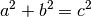

Proofs and Explanations¶
I used a bunch of spooky formulas in this tutorial. Some of them are
definitions of e.g.  or
or  , but in this chapter we’ll focus on those
that aren’t and prove that they actually work.
, but in this chapter we’ll focus on those
that aren’t and prove that they actually work.
Two ways to define sine and cosine¶

In the unit circle trig section we defined and
with a unit circle, but then in
the triangle trig section we defined them with a
triangle. These definitions are compatible with each other. If we draw a
picture like the one at right and apply the triangle stuff to the angle  , we
get this:
, we
get this:


The first two formulas are obviously true with any , but the last one is a
bit more interesting. We found another way to define  , and it
also works with a triangle:
, and it
also works with a triangle:

Pythagorean Theorem¶
This is a well-known proof and I like it because it’s simple.

We can calculate the total area of the above square in a couple different ways:
- The square’s sides are each , so the area must be
 .
. - The square consists of the green square whose area is
 and 4 yellow
triangles with area
and 4 yellow
triangles with area  each. Total area is
each. Total area is
 .
.
We must get the same area with both ways, so we get this equation:



Derivative Rules¶
In the derivative chapter I showed a bunch of rules without explaining or proving why they work. We also used this definition of derivative:

The warning in the beginning of the derivative chapter is all about this. Some mathematicians (most?) don’t like this at all because is a “small number” and it isn’t really clear how it behaves in different situations. Here’s a better definition:

We just replaced with  and threw in a . The
and threw in a . The  means that we take the limit as approaches
means that we take the limit as approaches  , so it’s just like our
thing but more explicit and also better-defined in some corner cases.
, so it’s just like our
thing but more explicit and also better-defined in some corner cases.
These proofs are ordered so that they don’t use any derivative rules that haven’t been proved before them.


The graph
is a horizontal line, so the slope is 0.
We can also plug
into the definition of derivative:


The slope of the line
is
because every time
is incremented by something,
is incremented by
in the derivative chapter.
Again, we can confirm this with the definition of derivative:


The graphis a straight line. If we increment
. You can also plug in to the previous rule.

This rule is particularly handy for differenciating long functions with many things added together. Let’s see what we get with the definition of derivative.
The
rule can be proved in a very similar way.


It’s not pretty, but we can use the definition.
![& \lim_{h\to0} \frac{f(x+h)g(x+h)-f(x)g(x)}{h} \\
&= \lim_{h\to0} \frac{\overbrace{f(x)g(x+h)-f(x)g(x+h)}^\text{this is 0}
+f(x+h)g(x+h)-f(x)g(x)}{h} \\
&= \lim_{h\to0} \frac{f(x+h)g(x+h)-f(x)g(x+h)+f(x)g(x+h)-f(x)g(x)}{h} \\
&= \lim_{h\to0} \frac{(f(x+h)-f(x))g(x+h)+f(x)(g(x+h)-g(x))}{h} \\
&= \lim_{h\to0} \left(
\frac{(f(x+h)-f(x))\ g(x+h)}{h} + \frac{f(x)\ (g(x+h)-g(x))}{h}
\right) \\
&= \lim_{h\to0} \left(
\frac{f(x+h)-f(x)}{h}g(x+h) + f(x)\frac{g(x+h)-g(x)}{h}
\right) \\
&= \lim_{h\to0} \left(\frac{f(x+h)-f(x)}{h}g(x+h)\right)
+ \lim_{h\to0}\left(f(x)\frac{g(x+h)-g(x)}{h}\right) \\
&= \left(\lim_{h\to0}\frac{f(x+h)-f(x)}{h}\right)
\left(\lim_{h\to0}g(x+h)\right)
+ f(x) \left(\lim_{h\to0}\frac{g(x+h)-g(x)}{h}\right) \\
&= f'(x)g(x) + f(x)g'(x)](_images/math/7b21e11b6b3e3b7d6d5ea90608f6e4837e585b81.png)

It’s easy to prove that this works for an individual
. Here I’ll prove that this works with all positive integers using a powerful technique known as induction.
Let’s start by showing that this works with e.g. :
Next we’ll prove that if it works at
then it also works at . Let’s write things down just to be clear:
We assume: We’ll prove:
Let’s apply the
and rules we proved above:
Now we can use our assumption.
So all in all, which is what we were supposed to prove. Now we know that this works when
, and thus it also must work when , and that means it works when and so on.
Note that we only proved that it works when
. It’s possible to prove that the rule isn’t limited to positive integers, but that’s beyond the scope of this tutorial.


We could prove this with the rule because , but we proved the rule only for positive integers. Let’s survive without it. Again, it’s a mess, but it works.
![& \lim_{h\to0} \frac{\sqrt{x+h}-\sqrt x}{h} \\
&= \lim_{h\to0} \frac{(\sqrt{x+h}-\sqrt x)(\sqrt{x+h}+\sqrt x)}{
h \cdot (\sqrt{x+h} + \sqrt x)} \\
&= \lim_{h\to0} \frac{(\sqrt{x+h}-\sqrt x)\sqrt{x+h}
+(\sqrt{x+h}-\sqrt x)\sqrt x}{h \cdot (\sqrt{x+h} + \sqrt x)} \\
&= \lim_{h\to0} \frac{\sqrt{x+h}\sqrt{x+h}
\overbrace{-\sqrt x\sqrt{x+h}+\sqrt{x+h}\sqrt x}^\text{this is 0}
- \sqrt x\sqrt x}{h \cdot (\sqrt{x+h} + \sqrt x)} \\
&= \lim_{h\to0} \frac{\left(\sqrt{x+h}\right)^2 - \left(\sqrt x\right)^2}{
h \cdot (\sqrt{x+h} + \sqrt x)} \\
&= \lim_{h\to0} \frac{(x+h)-x}{h\cdot(\sqrt{x+h} + \sqrt x)} \\
&= \lim_{h\to0} \frac{h}{h\cdot(\sqrt{x+h} + \sqrt x)} \\
&= \lim_{h\to0} \frac{1}{\sqrt{x+h} + \sqrt x} \\
&= \frac{1}{\sqrt x + \sqrt x} \\
&= \frac{1}{2\ \sqrt x}](_images/math/3d58d1647dd84bafe077521e206acda6d9065351.png)